Cada persona es una pieza. Juntas, un mosaico.
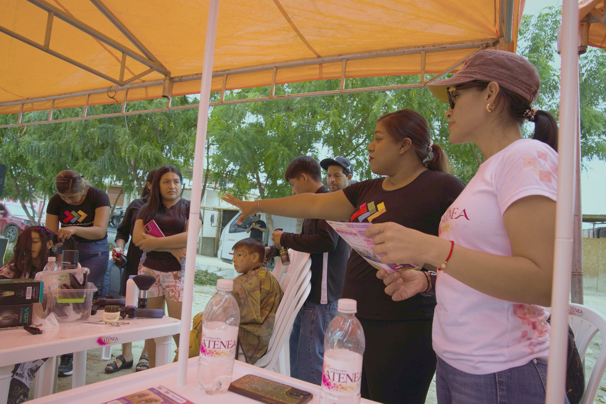
01 Propósito
Como el mosaico de nuestro logo, creemos que cada persona que ayudamos, cada voluntaria y cada aliado suman color a una misma causa: que nadie enfrente sola lo que puede enfrentarse acompañada.
Estar presentes
Brindar apoyo, acompañamiento y oportunidades a mujeres, varones, niñas, niños y familias en situación de vulnerabilidad en el Perú.
Ser referente
Ser la fundación referente en el Perú en asistencia social cercana, transparente y con impacto medible.
02 Valores
Cinco palabras que se cumplen.
Empatía
Escuchamos antes de proponer. Cada historia es distinta.
Dignidad
Ayudar nunca significa decidir por la otra persona.
Transparencia
Rendimos cuentas de cada sol y de cada acción.
Compromiso
Acompañamos hasta que la familia pueda caminar sola.
Respeto
Tratamos a cada persona con dignidad, sin importar quién sea.
03 Cómo nos organizamos
Un gobierno claro, áreas con función.
Estos son los órganos y las áreas previstos en el estatuto y en nuestro organigrama. Los nombres se publicarán cuando concluya la inscripción.
Consejo de Administración
Tres miembros (presidencia, vicepresidencia y secretaría), con cargos ad honorem. Dirige la fundación y aprueba sus estados financieros.
Gerencia General
Representa legalmente a la fundación, ejecuta las decisiones del Consejo y presenta los estados financieros y la memoria anual.
Programas
Salud, mujeres, varones y familias, niñez, orientación gratuita y ayuda humanitaria, con profesionales habilitados.
Administración y finanzas
Contabilidad externa, tesorería y registro de cada donación.
Alianzas y voluntariado
Convenios con universidades y colegios profesionales, y voluntariado capacitado.
Ética y datos personales
Atiende quejas y reclamos y cuida el tratamiento de los datos conforme a la Ley N.º 29733.
04 Cómo trabajamos
Serio, cercano y medible.
Institucionalidad
Constitución por escritura pública y trámite de inscripción en SUNARP y en el Consejo de Supervigilancia de Fundaciones.
Aliados y voluntariado
Universidades, colegios profesionales, empresas e instituciones de Piura y de todo el país.
Campañas en territorio
Salud, ayuda humanitaria y orientación gratuita, empezando por las provincias de Piura.
Rendición de cuentas
Resultados, personas atendidas y estados financieros que se publicarán en esta web.
05 Agenda 2030
Alineados con los ODS.
06 En terreno
Así se ve una jornada.
Imágenes de una de nuestras jornadas comunitarias en Piura. Las imágenes de niñas y niños se publican con la autorización de sus madres, padres o tutores; no mostramos a personas recibiendo atención médica.
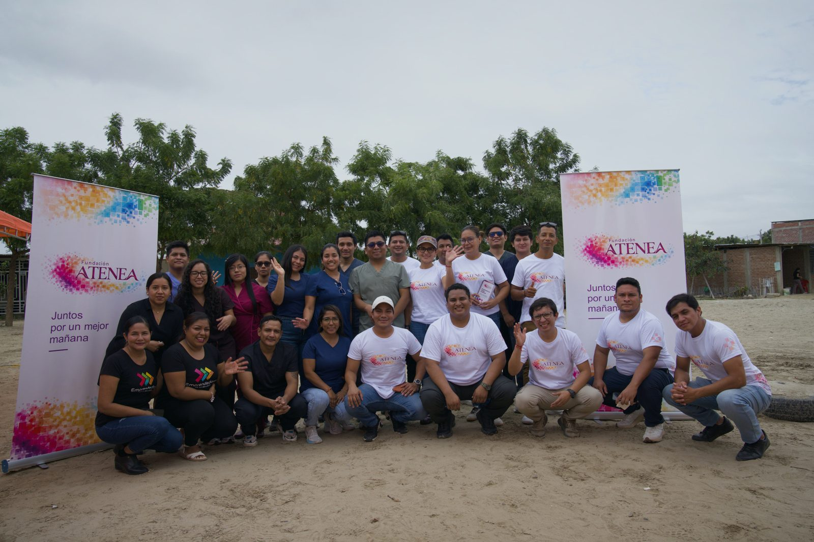
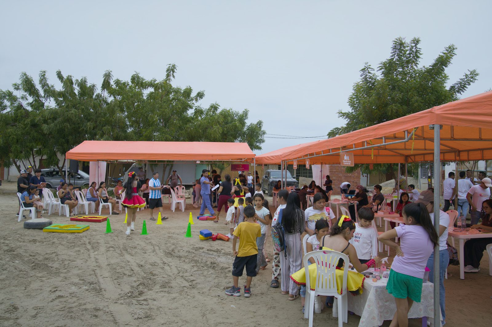
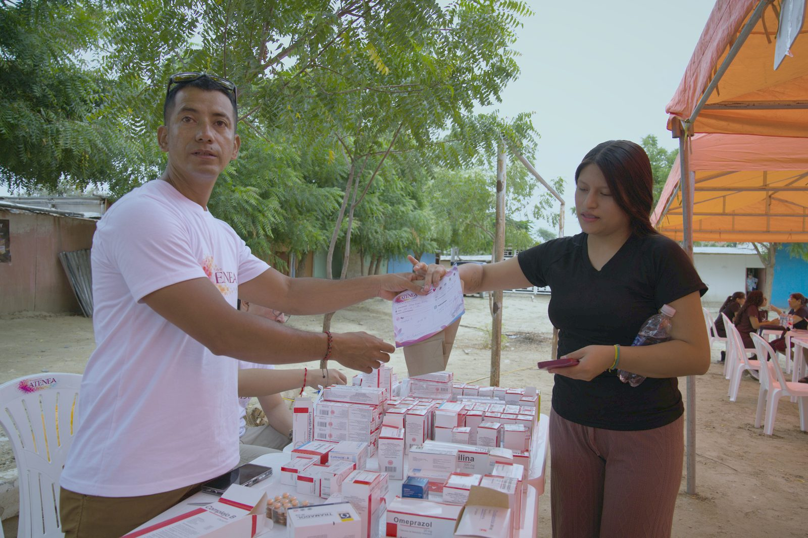
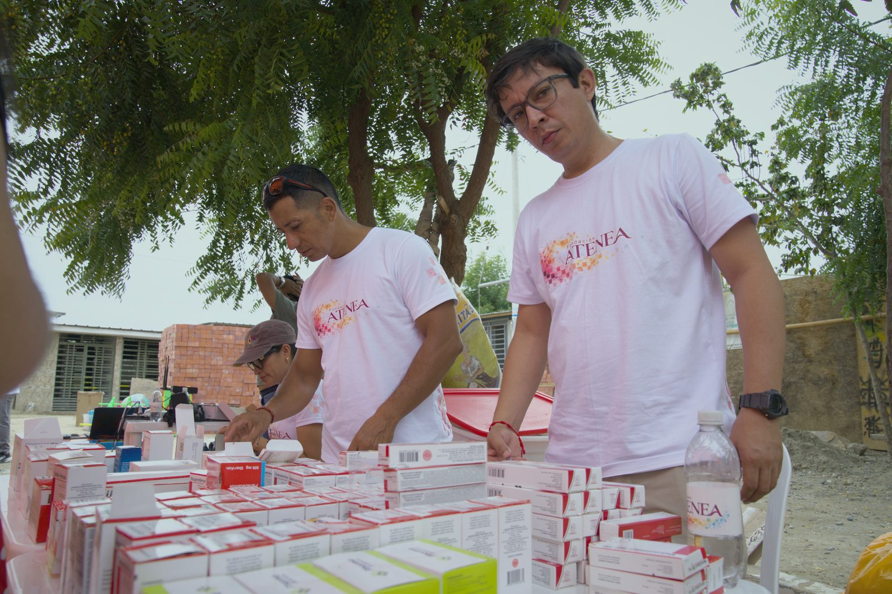
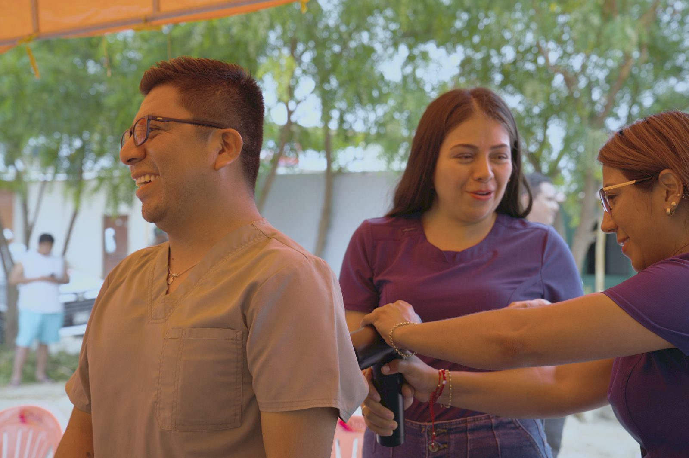
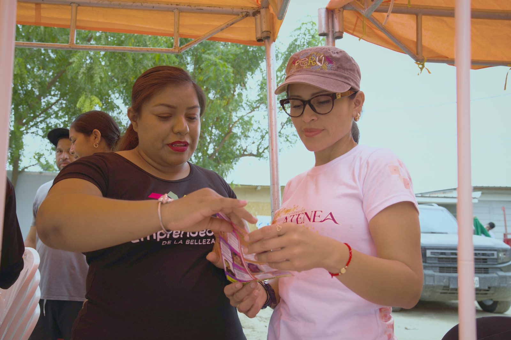
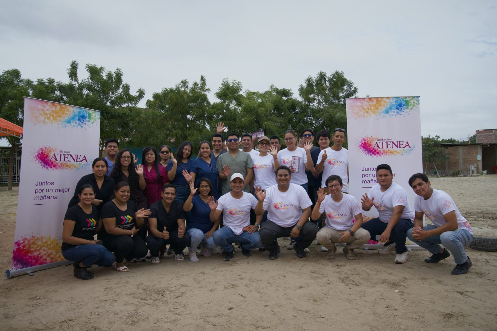
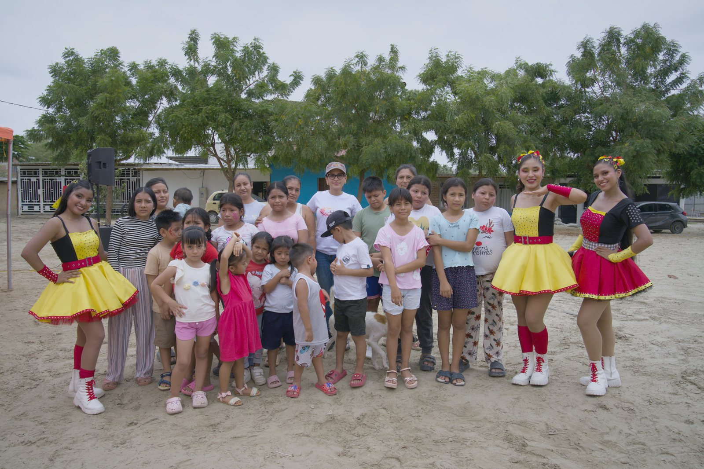
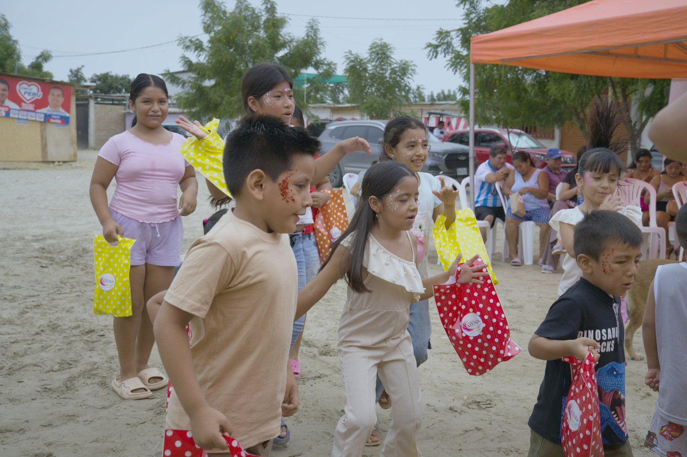
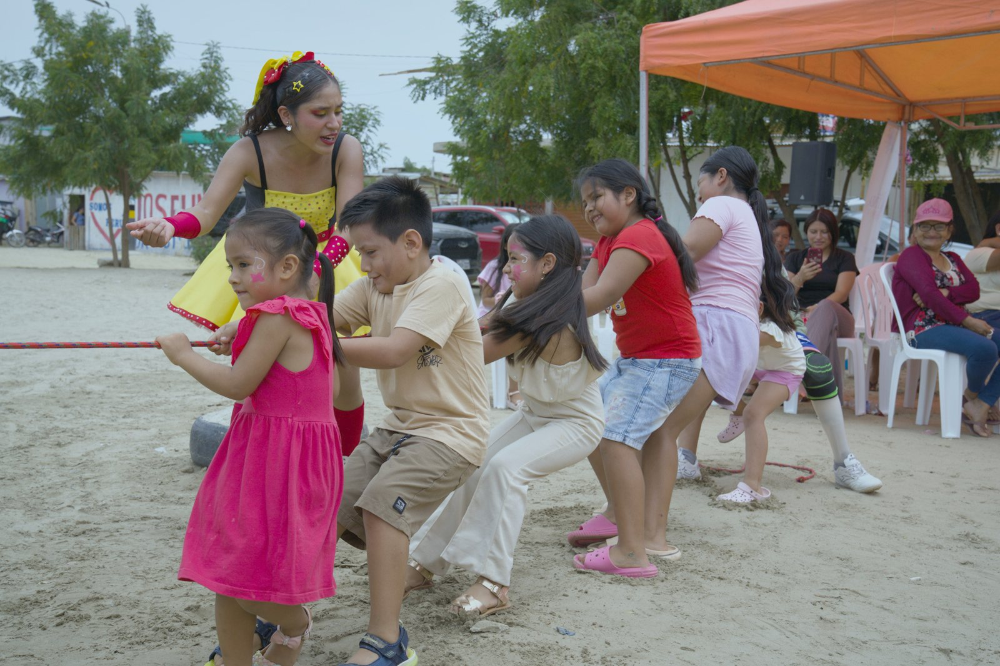